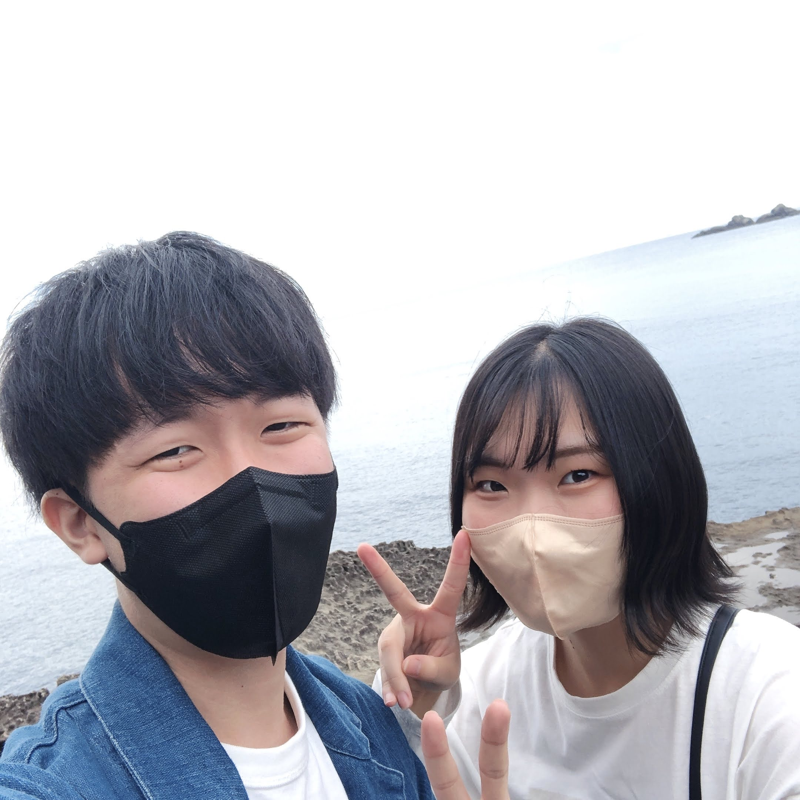

よくある質問
奥野夫妻への質問コーナー
気になる質問をタップしてみよう！

(夫)音楽を聴くこと、歌うことも好きでした！DSやらWiiやらいっぱいゲームもしてました！
(妻)小山慶一郎とマリウス葉です。

(妻)同じタイミングで同じ小学校に赴任しました。私がコロナに罹り、ホテルで隔離中に事務手続きの電話がかかってきたのが初めての会話です。未だに連絡先は「事務の奥野さん」で登録しています。隔離が終わり、右も左も分からないまま働き始めたら、事務職の奥野さんも「研修聞いたけど、ほぼ何のことか分からなかったです！」と言っていたので、この人も新卒なんだ！！と知りました。
(夫)とにかく話を聞いてくれるところ。くだらないことも愚痴も何もかも全部。
(妻) 平日、帰宅即晩ご飯が食べられるように、準備をしてくれていること！皿を洗ってくれること！あとは、隙あらば可愛いと言ってくれること。
(妻)喧嘩にならない工夫をしています。伝えたいことは、怒らず、ゆっくり言った方がよく伝わるものです。でも万が一ピリッとした空気になった時は、踊り始めます。
(夫)どんなことにも真面目で誠実なところ。
(妻)いろんなことをポジティブに捉えてくれるところ。
(夫)くだらないことも笑い合えて、一緒にいることがとても楽しい。それだけじゃなく、真面目な相談なども真剣に向き合ってくれるので、この人とならどんな困難も乗り越えられそうだなと思いました。
(夫)結婚式までの間にも、結婚式当日も、その後も、すべてにおいてファンの皆さんに楽しんでもらえるような工夫をしています！細かなこだわりポイントもぜひ感じて欲しいなと思っております！
(妻)手作りアイテムがいろいろあります！残業に負けずがんばりました！ぜひ可愛く写真を撮っていってね〜！
(夫)2人でしか作れない最高の想い出をたくさん作っていきたいです。その一環として、旅行では全国1718自治体を制覇します(あくまで願望)
(夫)これまでたくさんお世話になりましたファンの皆さんが楽しめるように全力で頑張ります！皆さんも全力で楽しんでいただけると、きっと素敵な時間になります！よろしくお願いします！
(妻)うわぁ〜〜〜〜〜！大好き〜〜〜〜〜〜！まじで好きです。大好きです。友だちになってくれてありがとう。本当にありがとう。LINE返すのいっつも遅くてごめん。また遊びたいです。本当はいっぱい遊びたいんだよ。お話もしたいんだよ。遊ぼうね。いつも本当にありがとね。連絡するからね！！！